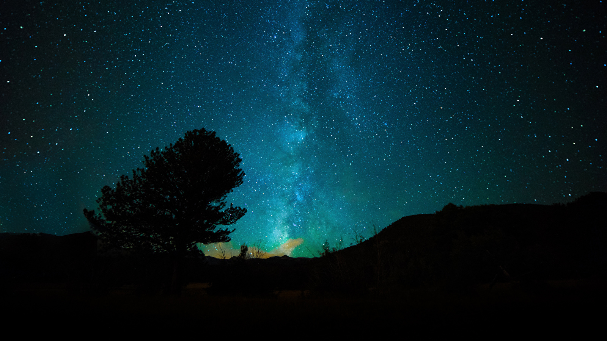
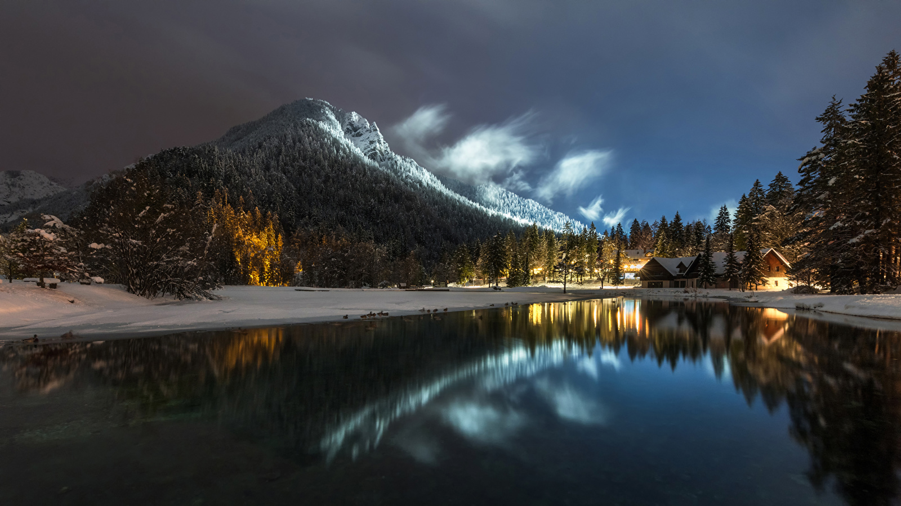

A Terra é o terceiro planeta mais próximo do Sol, o mais denso e o quinto maior dos oito planetas do Sistema Solar. É também o maior dos quatro planetas telúricos. É por vezes designada como Mundo ou Planeta Azul.

A aurora polar é um fenômeno óptico composto de um brilho observado nos céus noturnos nas regiões polares, em decorrência do impacto de partículas de vento solar com a alta atmosfera da Terra, canalizadas pelo campo magnético terrestre. Em latitudes do hemisfério norte é conhecida como aurora boreal.

Maciço Alpino ou Alpes são um dos grandes sistemas de cordilheiras da Europa, estendendo-se da Áustria e Eslovênia, Hungria, a leste, através do norte da Itália, Suíça, Liechtenstein e sul da Alemanha, até ao sudeste da França e Mónaco.